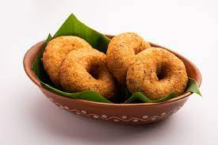

Vada Recipe

Ingredients:
- 1 cup urad dal (split black gram)
- 1/4 cup rice
- 1/2 teaspoon black peppercorns
- 1/2 inch piece of ginger, grated
- 2-3 green chilies, finely chopped
- 1/2 teaspoon cumin seeds
- A pinch of asafoetida (hing)
- 2 tablespoons chopped cilantro (coriander leaves)
- Salt to taste
Instructions:
- Wash and soak the urad dal and rice together in water for 4-5 hours. Drain well.
- Grind the soaked urad dal, rice, and black peppercorns together into a smooth batter. Add water as needed while grinding.
- Transfer the batter to a mixing bowl and add grated ginger, chopped green chilies, cumin seeds, asafoetida, chopped cilantro, and salt. Mix everything well.
- Heat oil for deep frying in a pan or kadai.
- Take small portions of the mixture, shape them into round vadas, and carefully slide them into the hot oil.
- Fry the vadas until they turn golden brown and crispy. Remove them from the oil using a slotted spoon and drain on paper towels.
- Serve hot with coconut chutney or sambar.